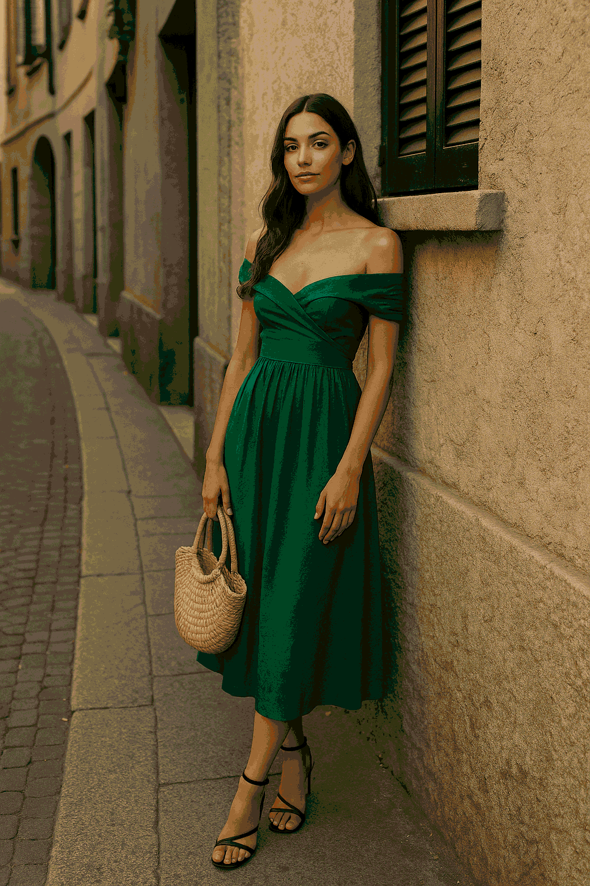
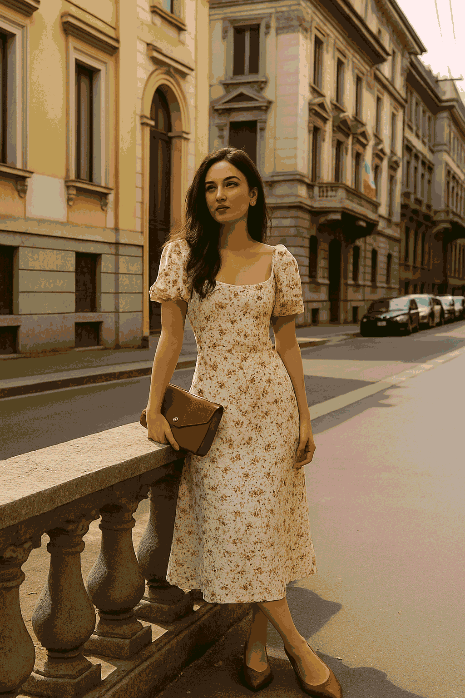

Modern Romance in Milan: 5 Looks to Fall in Love With This Summer
Modern Romance in Milan: 5 Looks to Fall in Love With This Summer
Summer in Milan isn’t just a season. It’s a flirtation — a whispered confession between sunlit streets and the people who glide through them like they own every shadow. Romance in Milan is not only about love — it’s about fabric, rhythm, and elegance. And when the heat rises, the style follows.
This year, Milanese summer fashion is doing what it does best: making simplicity look seductive. Forget flashy trends — this is about confidence, fluid silhouettes, and that impossible-to-fake air of “I woke up chic.”
“
Modern romance doesn’t need a bouquet — it wears silk, sunglasses, and a smirk.”
So if you’re ready to fall in love (with the city, with style, with yourself), these are the 5 signature looks setting Milan on fire this summer.
1. The Backless Linen Dress That Owns the Morning
It starts with a whisper of fabric. A breeze-catching, backless linen dress in cream or warm beige. It moves like poetry and drapes like a secret. Spotted at Corso Magenta cafés and Porta Venezia flower stalls, it’s worn by women who look like they wrote their own novels.
The Milanese backless dress isn’t trying to be sexy — and that’s what makes it irresistible. The linen is crisp but forgiving, the shape minimal but intentional. Pair it with delicate gold hoops, woven slides, and that effortlessly unbothered energy only Milan delivers before 10 a.m.
It’s not a trend. It’s a summer ritual.
“
In Milan, style doesn’t walk — it glides. And this dress leads the way.”
2. The Silk Co-ord That Says Aperitivo at 7
Not quite a dress. Not quite a suit. The Milanese silk co-ord is its own affair: tailored wide-leg trousers and a sleeveless shell top or kimono-style blouse, both in matching silk — maybe dusty mauve, maybe olive green.
You’ll find her near Navigli at golden hour, leaning across a terrazza table, sipping something bitter and sparkling. The fabric catches the light like it's gossiping with the sun.
What makes this look powerful isn’t the polish — it’s the restraint. The lines are clean. The palette is quiet. But the effect? Devastating.
She doesn’t post stories. She is the story.
Accessories? Minimal. Sunglasses oversized. Nails short and pale. And the confidence? Practiced.
This is the outfit that says, “I have reservations, and not just at the restaurant.”
3. The Romantic Blouse + Sharp Trousers Equation

Picture it: a sheer, ruffled blouse in faded floral or ivory chiffon, paired with tailored, high-waisted pants in crisp white or slate gray. The blouse flirts. The trousers correct. Milanese elegance lives in that contrast.
You’ll spot her window shopping in Brera or walking with purpose across a cobblestoned street, tote bag swinging. She knows that softness is power — when properly balanced.
Hair? Loosely tied or fully free. Feet? Low block heels or vintage sneakers.
“
Romance doesn’t mean surrender — it means knowing exactly when to lean in.”
This is the outfit that makes strangers wonder if she’s an architect, a poet, or both. She doesn’t need to explain. Milan understands.
4. The Monochrome Midi with Unexpected Edge
White on white. Or black on black. Or the softest slate with matching heels. The Milan monochrome midi look is sharp, quiet, and unshakably intentional.
The dress is fitted — not tight — and stops just below the knee. Sleeveless or with a crisp cap sleeve. No patterns. No noise. The interest is all in the cut, the drape, the walk.
But here’s the twist: an unexpected detail. Maybe an asymmetrical neckline. A bold cuff. A red lip. Or an industrial silver earring that seems to say, “I once broke someone’s heart in this dress.”
This isn’t modest. It’s mastered.
The Milanese woman in monochrome doesn’t chase your gaze. She lets you realize you’re already following her.
5. The Slit Skirt and Structured Tank

This is the outfit that doesn’t need a date — but usually gets one.
A high-slit midi skirt (in linen, cotton twill, or satin depending on her mood) paired with a sculpted tank: square neck, thick straps, no fuss.
It’s perfect for crossing the city on a Vespa, climbing the stairs to a rooftop bar, or pretending not to wait for a message that just arrived. The skirt moves when she does. The tank holds everything in place — including the mood.
She’s not over-accessorized. Maybe a leather watch. Maybe a lip tint. But the confidence is custom.
“
It’s not that she doesn’t care. It’s that she decided before you arrived.”
This look isn’t loud. But it speaks fluent Milanese.
Final Thoughts: This Summer, Fall in Love With Yourself
Milan’s romance isn’t about being seen — it’s about being styled for your own story.
This summer, let your outfits hold your spine straighter, your glances longer, and your afternoons slower. Whether it’s linen, silk, monochrome or minimalism, dress like your future self is already watching you… and she’s impressed.
You don’t need permission to feel beautiful. You just need a city like Milan — and five looks that don’t apologize.
Published: 2025-05-16